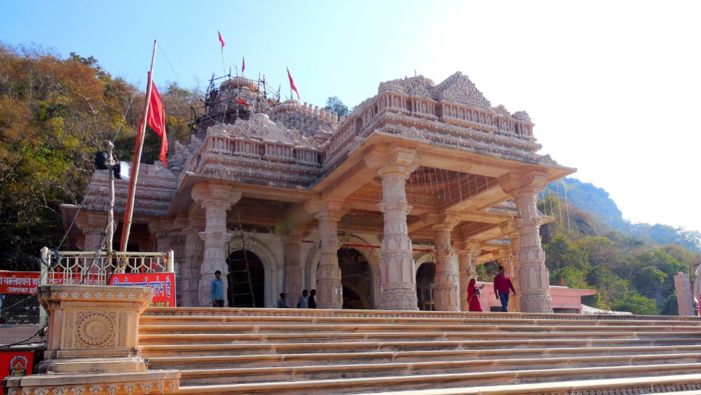

Some Historical Places in India
1) Jhansi Fort

Jhansi Fort or Jhansi ka Kila is a fortress situated on a large hilltop called Bangira, in Uttar Pradesh, Northern India. It served as a stronghold of the Chandela Kings in Balwant Nagar from the 11th through the 17th century.
2) Ram Raja Temple

The Ram Raja Temple is a temple in Orchha, Madhya Pradesh, India.It is a sacred Hindu pilgrimage and receives devotees in large numbers regularly and is also commonly known as Orchha Temple
3) BhanGarh Fort
The Bhangarh Fort is a 16th-century fort built in the Rajasthan state of India.[1] It was built by Bhagwant Das for his younger son Madho Singh
4) Mahabaleshwari Temple
Bambleshwari Temple is at Dongargarh in Rajnandgaon district, Chhattisgarh, India. It is on a hilltop of 1600 feet. This temple is referred as Badi Bambleshwari.
5) Chopta , Uttarakhand
Popularly referred to as the ‘mini Switzerland’ of Uttarakhand, Chopta (at an approximate altitude of 2,608 m) is a slice of paradise tucked away in the Garhwal Himalayas.
6) Ukhimath
Located around 45 km from Chopta, Ukhimath is the winter seat of Lord Kedarnath. There are several other well-known temples here like the ones of Usha and Aniruddha.
7) DeoriaTal
Around 50 km from Chopta, this beautiful high-altitude lake (around 2,438 m) sitting amidst mountains and forests makes for a refreshing trek.
8) Chandrashila Temple
Perched on top of the eponymous peak, this simple stone temple is dedicated to Goddess Ganga. The peak, at altitude of around 4,000 m, is one of the most stunning mountains in the region and offers stunning views of several Himalayan peaks.